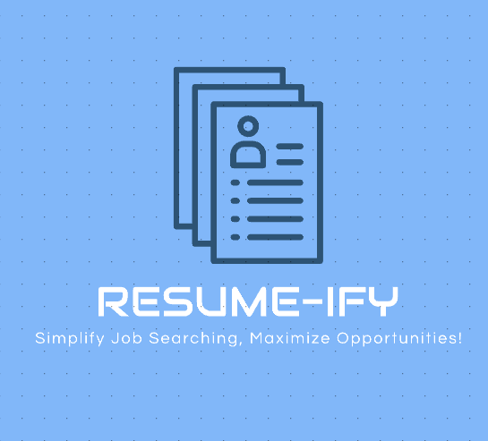

Resume-Ify is a website that helps you find job opportunities based on your resume. You simply upload your resume and pick a location! The site reads through it to find relevant information.
It then gives you a list of job applications that match your skills and experience. After you submit your resume, you'll see the results on a new page, making it an easy and personalized way
to search for jobs.
